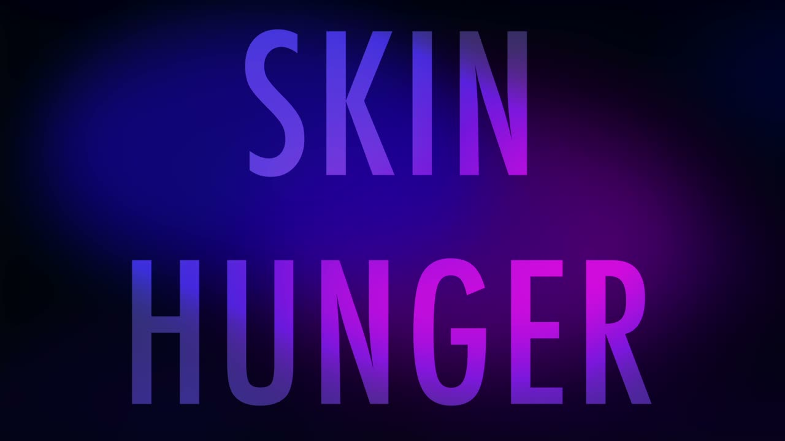

Skin Hunger
Skin Hunger
1. PubPub Link
https://nime.pubpub.org/pub/z8ivwmf7/draft?access=mxs6t11q
2.Conference Abstraction
Skin Hunger is a web-based interactive installation allowing participants to create music and evolving creatures via virtual touch. The work plays on the video-chat format used in remote meetings – now almost ubiquitous due to the pandemic. However, unlike business-style video-chats, participants can reach across and virtually touch one another. The work uses a webcam to perform motion capture such that each time participants touch, the interactive system records their touch in sound, playing back and reflecting upon that moment of contact. Additionally, a virtual creature comes into being, becoming more complex with every participant interaction. By maintaining in virtual contact with each other, participants can also together play a type of musical instrument that responds to their synchrony, position, and movement. The title of the work, Skin Hunger, refers to the biological requirement for physical human contact as well as the condition that results from an extended lack of human touch. This work was created in the context of the 2020 coronavirus pandemic and subsequent wide-spread social distancing. One of the aims of our work is to provide solace and solidarity with those living in isolation.
3.Requirements (optional, especially for the performance on-site)
N/A
4.Program Description
In Skin Hunger, participants are invited to kinetically escape the rectangular confines of their web camera via an audio/visual experience facilitated by digital embrace. Participants access the web-based installation by going to the website and allowing the site to access their webcam. Participants can choose to be paired with a random partner or they can click and copy a link to send to a friend. As the participants interact through touch and movement, they create an audio/visual organism that progresses in complexity, but without interaction, the organism regresses. Initial touch results in a long, held horn sound, and a visual organism begins to take shape. The pitch of the sound is determined by the location of the embrace. Participants shape the sound and organism in different ways by moving in synchrony while they are touching and holding the touch longer. Each touch also evolves the organism and creates a short sound, which will repeat in its own rhythmic cycle, until it “dies”. The length of time each short touch note stays “alive” and how many short notes are “alive” at once is determined by the average movement between the two participants. The percussion parts are determined by the both the number of short note cycles “alive” and the average movement of both the participants.
This work was created in response to the increased use of video communication during the 2020 global coronavirus pandemic, and the stress incurred due to a lack of touch as a result of quarantining and social distancing. Lack of touch can result in a condition known as touch starvation, sometimes referred to as skin hunger, which leads to increased levels of cortisol and feelings of social exclusion. While the remedy for touch starvation is skin to skin contact, we wanted to offer a digital alternative for those unable to obtain that remedy. We hope that participants interacting with this piece will enjoy a break from the confines of the rectangular grid of video communication.
Skin Hunger is the one of the first in a larger series of pieces and prototypes investigating human embodied connection. An aim of the work is to reflect the physical qualities of human relations in sound and visuals, providing a way for participants to experience the results of their own actions and relations towards others in a novel way. For instance, in our future system, if participants were abrupt in their movements and interactions with one another, a spiny, scurrying creature could evolve. The creature could make sharp, percussive sounds. Thus, we are working on creating perceptual measures for physical qualities of human connection and actions towards each other and translating those qualities into sound and creature evolution.
This web-based installation was written in Javascript/Typescript. Tonejs1, a library sitting on top of Web Audio API2, was utilized for synthesis and real-time sound. We created the video chat using WebRTC3 and Peerjs4 technologies. Thus, the application mainly runs on the browser, with each user connected to the other. The one exception is that a Peerjs server application hosted on Heroku5 connects the two individual users together at the start of the interaction/video chat, but this remote connection to the hosted Peerjs is closed after initial contact. Additionally, computer graphics are driven by Threejs6, a library that sits on top of WebGL. We initially used Posenet7 for pose-estimation and skeleton-tracking, but then moved to Mediapipe8 for run-time performance reasons. Synchronization and spatial similarity is measured via cross-correlation.
5. Media
Interactive Website Link: https://skinhunger.org

▶